这几天过年，甚少上博客回复评论，抱歉 :(
作为农历年的第一篇博文，来转载一下对 CCTV 春晚的吐槽。
《吴虞：“样板戏”化的春晚 @ 博谈网》
（编程随想注：以下是本文部分摘录，粗体是俺标注滴）
《王五四：这届春晚很尴尬 @ 墙外楼》
（编程随想注：这篇已经在墙内被和谐掉了。俺给出的链接是“墙外楼”的镜像。以下是本文部分摘录）
《霍老爷的小木屋：你努力地生活 就是为了不活成春晚小品的样子 @ 博谈网》
（编程随想注：以下是本文部分摘录，粗体来自原文）
《氯气灯芯：想和大家说这次春晚对我的伤害有多大 @ 博谈网》
（编程随想注：以下是本文部分摘录）
《VR兴趣圈：春晚，镶了钻石的屎也是屎 @ 自由微信》
（编程随想注：这篇出自微信，原文已经被删除；俺给出的链接是“自由微信”制作的镜像。以下是部分内容摘录）
《春晚的22个尴尬时刻 @ 中国数字时代》
（编程随想注：这篇出自微信，原文已经被删除；俺给出的链接是“中国数字时代”的镜像）
《我为什么决定不看2017年春晚了——没有信任就没有伤害 @ 界面》
《王亚中：山外青山楼外楼，春节晚会几时休 @ 自由微信》
（编程随想注：这篇出自微信，原文已经被删除；俺给出的链接是“自由微信”制作的镜像）
荣剑：
【春晚的十宗罪】
首罪为假，虚情假意，毫无真诚；
次罪为骄，虚张声势，自吹自擂；
三罪为奢，奢靡无度，极尽排场；
四罪为空，言之无物，尽说废话；
五罪为利，蜂拥而上，追名逐利；
六罪为贿，卖身入场，千金一笑；
七罪为贵，浪费公弩，花钱无数；
八罪为俗，俗不可耐，艺人堕落；
九罪为谄，阿谀之词，献媚之极；
十罪为权，文艺管制，斯文扫地。
NNNt.：
嘲笑女人、残疾人、南方人，富人都是为富不仁，穷人就得我穷我骄傲。
男的是直男癌宽宏大量原谅不能生的女人，女的是直女癌委曲求全主动离开三代单传男。
生活总是给我种错觉，让我以为生态环境在变好，然而每年的春晚都能一棒子给你打回来还踩上几脚。
妈的，南方人看什么春晚，好气。
淋：
第一个上天的小品很恶心，就是那种糟蹋爱情的恶心。
复婚的小品很恶心，就是那种糟践婚姻的恶心。
什么时代了？我不明白为什么像春晚这样的大舞台还要把女性角色塑造成这样，也不明白到底什么样的男人看这种东西能笑得出来……
国王KING：
很努力，却笑不出来。有些节目的三观真特么令人恶心，直男癌病变的程度……
都2017年了，内核还是旧世纪的思想，小品里塑造的仿佛是另外一个国家。
今年的舞台红绿搭配简直亮瞎眼，春晚的审美好可怕。
唐映红：
古踢：
直到李谷一奶奶上场，感觉这年终于熬完了。
从成年以后都没这么早困过。
鞭鞭于白水：
导演，明年可以第一个节目就是李谷一老师的《难忘今宵》吗？
这样大家都省事儿...
赵国君：
【珍惜春晚，远离生命】
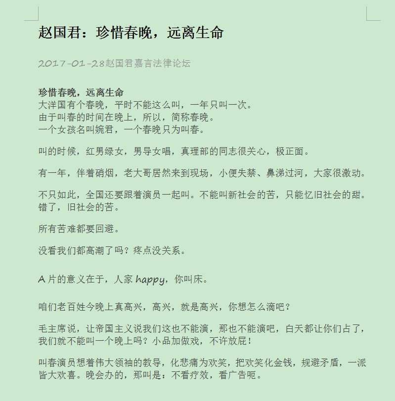
高瑜：
昨晚没看春晚，今天一看微信，到处是评春晚的帖子。
我还不打算看春晚，我想看帖子一定比看春晚有趣的多。
给大家转几贴，拜年大家乐！
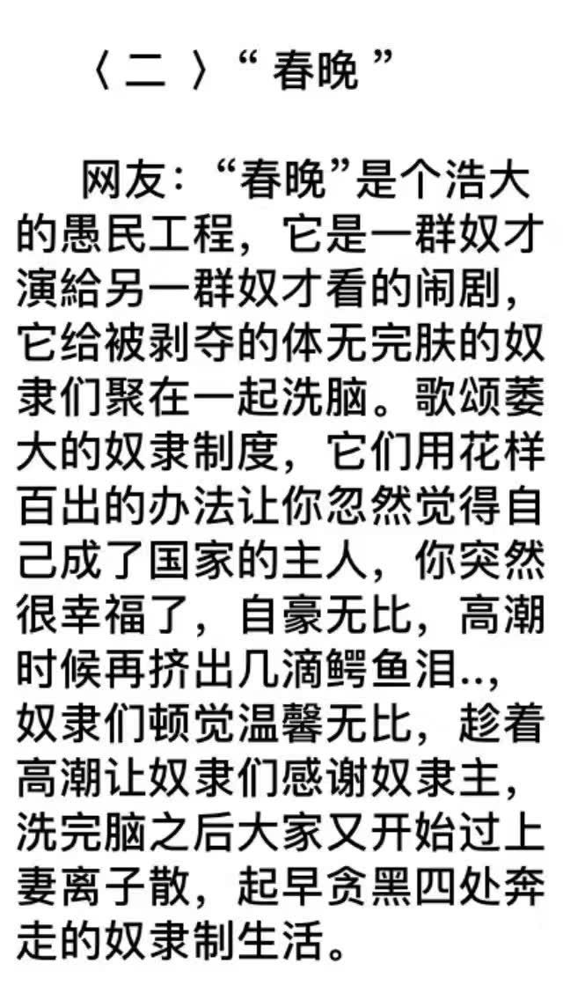
竇奕博：
不才剛好在大陸過年，看了幾個小時的春晚。
發現春晚越來越淪為宣導政策，或者是美化人性的工具。
以前的相聲還有點諷刺實時的意味；現在的無論小品還是相聲，甚至一些節目。開始宣導所謂的感性，但太多了。多到矯情了。
汤圆默：
（央视自吹）「这届春晚好评如潮」
这是欺负我没见过好评，还是没见过潮？
彻因：
为什么总以为全国人民都是智障？
zumingFu：
自从用上宽带之后，中央电视的节目就再没有看过。
说的比什么都好，离老百姓的距离却越来越远，本人只有对它们敬而远之！！！
它们的服务是为政治的，而不是为广大的老百姓的。
久而久之，不看这种节目也不觉得有什么损失。
风吹丁丁响当当：
谁能想到今年最好看的节目居然是舞蹈。
风吹丁丁响当当：
冯巩啥时候出来？
我等着他那句“我想死你们啦”，说完就关电视。
（某不知名网友）：
有一种笑叫“主持人身后群演的笑”
（某不知名网友）：
观众：你们不嫌尴尬尽管演，能笑出来算我输
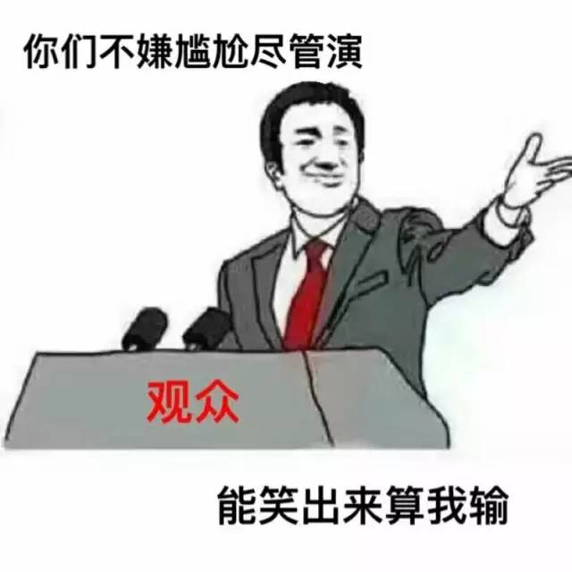
番茄市长：
我看的是尬晚。
hitchhiker：
新二十四孝——陪父母看春晚
二斤半橘子：
第一个小品就垃圾！！垃圾！！垃圾！！
伤害全国人民感情！不能再烂！
自我厌恶小圆脸：
假唱！还禁言！不要脸！繁殖癌！垃圾！
（某不知名网友）：
我，广州人，对“春晚”的感觉就好像对下雪那样陌生，甚至视之如无物。
（编程随想注：不要听信 CCAV 的自我吹捧。单看最近几年的豆瓣打分，春晚是一年不如一年；以至于，2017年的春晚，连打分都不允许了）
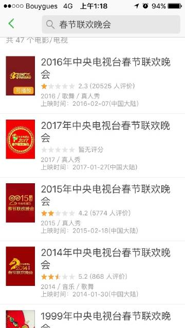
胡叉叉：
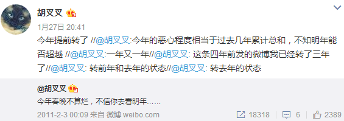
古踢：
每年我们都说这是史上最烂的一年，然后第二年再刷新下限向去年道歉。
难道是春晚洗白的固定套路吗？
“明年更烂”这个梗，看来要用一辈子了。
风息神泪：
春晚马上要开始了，今年不管多难看，不可能比去年更难看吧？
眼睛长在屁股上：
还没看完今年的春晚，就想对去年的春晚说一声对不起。
Stuck+like+glue：
当你觉得上一年的春晚很难看的时候，知足吧，因为今年的更难看【doge】
layer：
谁说今年春晚烂了？？？那是你还没看到明年的春晚！
显然是受到真理部的胁迫，豆瓣禁掉了“2017春晚”的评分和评论功能。
（编程随想注：禁止评分前的截屏）
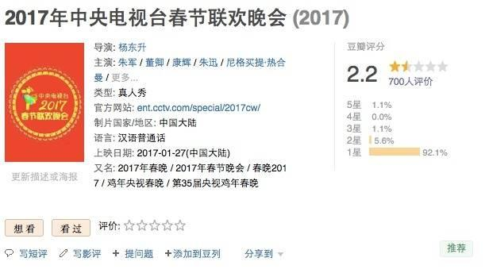 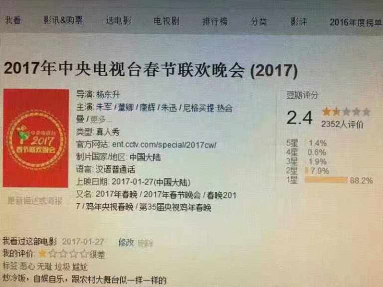 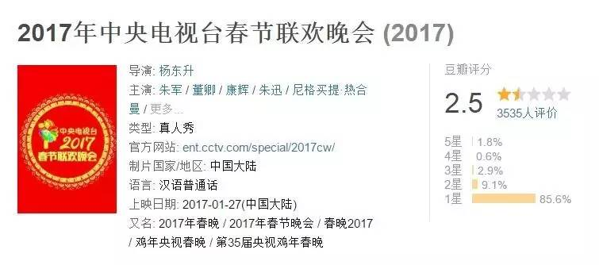
（编程随想注：禁止评分后的截屏）
《唐映红：豆瓣上不可描述的“春晚” @ 墙外楼》
La Luna：
救不了，真的！这是全豆瓣最统一的一回。
巴伐利亚酒神：
感觉豆瓣又要被点名批评了……
l ï：
怕豆瓣倒闭，就不打星了
Jason：
为了明年还有个地方声明自己不看春晚，必须先给阿北（豆瓣老板）一条活路
颗斗之乐：
好吧，为了豆瓣，我点赞。。。
萝贝贝：
（编程随想注：以下是官方微博的截屏）
《中国央视2017年春晚——“老红军造假”引发微博屏蔽潮 @ BBC》
爱新觉罗载勋：
你们太不认真了！这位朱光斗非但不是红军，连八路军也没当过；他实际上是在1946年抗日战争胜利后参军的，那时候已经是中国人民解放军了，他于1954年入党。
———而你们说“86岁的老红军朱光斗，从延安开始就以手中的快板为武器，歌唱英雄的人民军队，让我们洗耳恭听，向他们致敬！”是一个重大失误。
胡平：
朱光斗，我都记得很清楚，我们小时候经常在收音机上听到他的快板书。
那时候没有电视，所以对我们这些上点年纪的人来说，这个演员是个大家比较熟悉的演员，也记不得过去给他安上什么老红军的头衔。
所以这次给他戴上个老红军的桂冠，当然就很滑稽，而且就像很多网友说的，年龄根本不对，根本不可能的事情嘛。
（编程随想注：有人睡着了）
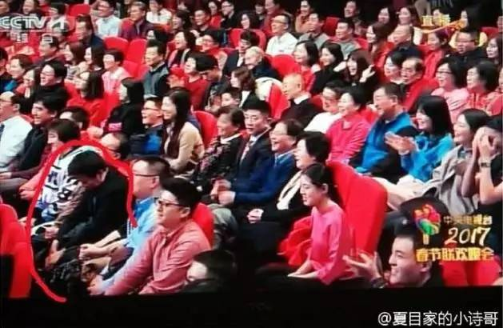
（编程随想注：现场观众某些人表情怪异/尴尬）
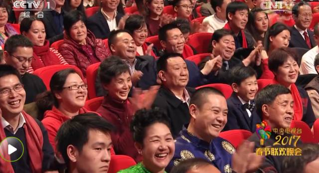 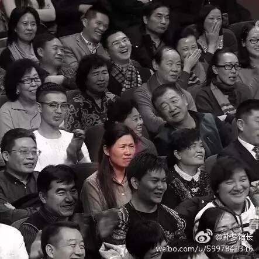
水晶男孩鸡大帅：
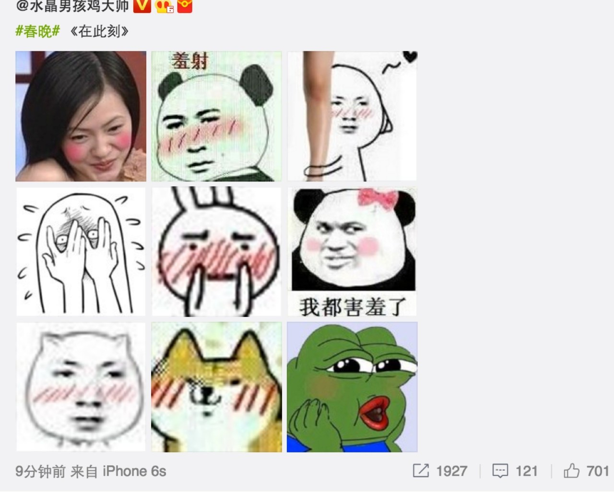
检书少年：
我要是在现场，我也是这种表情。

LexBurner：
我要是在现场，我最怕的不是尴尬，而是自己笑错了。
（编程随想注：以下是中宣部/真理部下发到各级单位的通知）
（编程随想注：除夕当天，在朋友圈发“珍爱生命远离春晚”，会被屏蔽）
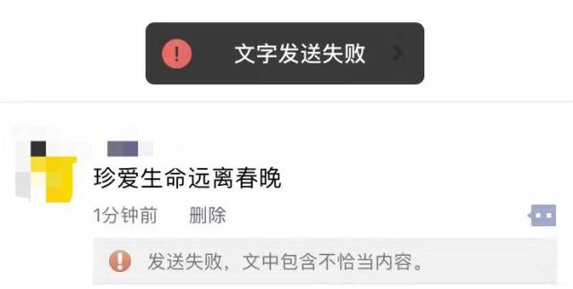
（某不知名网友）：
2017年春晚没播完之前，是可以评分的。我最后一次看是2.4分。播完之后就看不到分和评论了。
就在这一刻，我对除夕之夜还辛苦辛劳坚持在上网疯狂删帖，维护网络舆情的工作人员肃然起敬。
看来他们是一年365天，全天监控着你的网络生活环境的。
这样的人不能惹，只能呵呵。
v菇v：
（2017春晚）豆瓣春晚唯一不能评分的一年，或者说，开始不能评分的第一年。
不民主不統一：
你國春晚已經成為共匪的效忠儀式，兲朝奴隸們是沒有資格評論了
晒爱思PsyEyes：
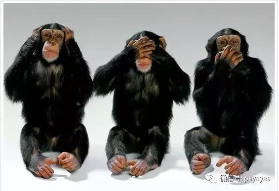
俺博客上，和本文相关的帖子（需翻墙）：
各种迹象显示——党国喉舌正逐渐失去舆论阵地
如何用互联网进行“反洗脑”和“政治启蒙”——分享若干个人经验
聊聊洗脑和脑残——分析“脑残的起源”和“脑残的觉醒”
朝廷为何落入“塔西佗陷阱”？
每周转载：真理部开始对娱乐圈下手——大批自媒体被封号（相关报道及网友评论）
每周转载：不一样的猴年春晚（分享大量网友评论）
作为农历年的第一篇博文，来转载一下对 CCTV 春晚的吐槽。
★相关的批评文章
《吴虞：“样板戏”化的春晚 @ 博谈网》
（编程随想注：以下是本文部分摘录，粗体是俺标注滴）
说句公道话，春晚的这种“政治化”转变并非其始于本届，也不能全怪导演杨东升，还记得去年的春晚吗？还记得那位“自打100分，称交出满意答卷”的吕逸涛导演吗？这倒不是说以前的春晚里没有政治，想当初，长者还上过春晚给全国人民拜年呢，这不是政治是什么？但就像段子手形容的那样，以往的春晚是晚会里面添加政治元素，而从上届开始，则是新闻联播里面掺入些晚会的成分。所以上世纪八九十年代，在那个春晚还为民众所喜闻乐见的时期，我们还经常能在春晚上看到一些对社会问题进行尖锐讽刺的小品相声，而现在，就连这种社会性的批评也基本销声匿迹了。今次唯一的特例要算姜昆的《新虎口遐想》，但那还是借着30年前的老段子改编的，属于老戏新唱。
......
用法学家贺卫方的话来讲，央视春晚已落入宣传甚至强颜欢笑，用各种歌舞升平来掩饰弊端和不公的可怜境地。是不是越看越象样板戏，那种继封杀触线艺人，彻底打通“两个舆论场”后，成为下一步各种综艺娱乐节目参考模仿的“样板戏”？厉害了我的央视！
说到评价一样东西能否成为样板戏，江青同志为我们确立了两条标准：除了表现形式、表现内容的脸谱化，还必须是要受到权力的高度加持。就此两点而言，春晚其实已经不是“样板戏”化了，而早就是样板戏了。其中，脸谱化这点咱就不细说了，因为观众的眼睛是雪亮的，看看如今的春晚节目，劳动人民没有不幸福的，民族关系没有不和谐的，党的历史是无比光辉的，国家前途是无限光明的……
按照过去的戏曲标准，央视春晚都可以独立成为一个曲种了——春剧，直接将京剧PK下去，成为本朝的国剧。好在对于这一点，央视的负责人自己都不否认，用他们的话讲，“央视春晚要表达央视的主流文化意志，而不是全国好看的节目的大杂烩。”既然如此，还有什么好争论的，还是来聊聊权力对央视春晚的加持吧。
而权力的加持至少在两方面令央视春晚获益，一方面，它曾一度帮助央视获得制度性垄断——“大概是1986年以后，当时的广播电影电视部有了指示，禁止各地方台在除夕制播同类的晚会节目”——尽管这种垄断近年来已经不复存在，但另一项特权——“禁止外界批评”却延续了下来，并且这两年得到了特别的加强。不仅在豆瓣上，本届春晚已成为VIP条目，既不能打分也无法评论，在其他任何平台，涉及春晚的批评文章都已遭到全网封杀。至于这些文章究竟“涉嫌违反相关法律法规和政策”中的具体哪一条，You ask me，I ask who 啊？
当然这种加持不是免费的，是要付出代价的，代价就是春晚渐渐背负上了巨大的宣传任务，结果安全、稳妥压倒了创新、娱乐，不出错成为衡量春晚好坏的第一标准。但宣传部门固然可以把春晚打造成为综艺娱乐领域的“样板戏”，群众却可以选择不看来进行消极抵抗。事实上，在如今的社交媒体上，不看央视春晚已经成为大众标榜自身娱乐品位必须拗的造型，甚至，吐槽春晚都被一些人视为很low的行为，因为那说明你至少看了。
《王五四：这届春晚很尴尬 @ 墙外楼》
（编程随想注：这篇已经在墙内被和谐掉了。俺给出的链接是“墙外楼”的镜像。以下是本文部分摘录）
当写下这个题目时，我就知道这篇文章摆脱不了被删的命运，因为这届央视春晚，不允许有差评。但还得写，这就是宿命，就像电影《降临》里说的那样，”Despite knowing the journey，and where itleads，I embrace it。And Iwelcome every moment of it。”
意思就是说，”我能预见所有的悲伤，但我依旧愿意前往。”不允许给春晚差评，这事真的挺尴尬的，我的朋友眉毛大师说，你可以无耻，但不能无趣。
的确，无耻加上无趣，会给人无尽的尴尬，就像前段时间官媒发表评论称，恶评伤害了中国电影产业一样，然后还成立了一个”国”字头的影评组织，郑重其事地宣布了《网络影评人七大公约》，真的挺让人尴尬。
下届春晚会不会成立一个春评组织并发布一个《春晚评论公约》呢？可能性很大，因为现在在豆瓣上你已经不能给2017年央视春晚评分了，而之前还可以评分时，大家给的平均分是2.4分。
没有评分就没有伤害，给了你评分的权利，但你没有珍惜，滥用了差评，所以就剥夺你评论权利终身，现在很多事情的逻辑都是这样赤裸而霸道的。
一件荒诞的事情你越郑重，它就越可笑，不论是之前的影评组织，还是未来的春评协会，都是如此，这同时也是春晚语言类节目的核心，有了这个核心，节目才好笑。
我们其实不必再抱怨春晚不好笑了，或者说根本不必在乎未来的春晚好不好笑，因为真正好笑的事情，在这一年的现实生活里随处可见，我们已经活成了一台春晚。
况且，央视春晚的功效，也不是为了让你乐，而是传输精心打造的意识形态，每一个节目都是一枚裹着糖衣的药丸，你喜欢糖衣，也不得不吃下药丸，但现在他们连这层糖衣都做不好或者说懒得做了，药丸假的很明显，病人真的很尴尬。
《霍老爷的小木屋：你努力地生活 就是为了不活成春晚小品的样子 @ 博谈网》
（编程随想注：以下是本文部分摘录，粗体来自原文）
王阳明说：破山中贼易，破心中贼难。
现代科学技术和文明以摧枯拉朽之势而来，改变了我们的模样，有些人拎起了爱马仕，开起了宝马车，穿上了阿玛尼，看起来青春时尚，但这些人头脑没有改变，在他们光鲜的皮囊之下，是一个古人。
对你催婚逼婚逼着生孩子的七大姑八大姨们，她们心里还裹着小脚；
让女人回归家庭，伺候婆婆媳妇小姑子的意见领袖，他心里还穿着长衫大褂，在牙床上烧着大烟泡；
说着“女人读书有什么用”，骚扰女下属的企业高管，他们心里还在想着三妻四妾，后宫成群。
时代的列车轰轰向前，有些人跟不上这辆车，就永远成了古人，这些人会跟螳螂一样，举起双刀，自以为可以阻挡一下历史大势。
他们不是不对，只是他们太老了，他们太高寿了，他们不甘心就这么退出历史舞台。
《氯气灯芯：想和大家说这次春晚对我的伤害有多大 @ 博谈网》
（编程随想注：以下是本文部分摘录）
从那个相亲小品开始，我就开始背过爸妈偷偷哭，一直现在双手都是抖的。
我一直很想知道有多少女孩子像我这样，从小在这样的话里长大。
“你是个闺女，所以你就别太折腾，你要是个儿子，就让你出去闯荡闯荡。”
“你见过哪个女的有出息？不都得靠男人养着？”
“等你以后结婚，爸就给你买辆车。”“我自己挣钱买。”“你买？你放心，你不可能买得起。”
有一次股市崩盘，爸爸幸免于难，一个遭殃了的叔叔嘲讽他：“你赚那么多钱管什么用？还不是没有儿子。”
我周围是有这样的大环境的，大多一起长大的朋友都听过类似的声音，但很少有人像我这么在意。我自尊心很强，为此做了很多没必要的事。
我踢足球不是因为我喜欢运动，是因为我爸说过“我觉得女的踢足球不太好吧。”
我不化妆不是因为我懒或者毫不在意脸上的痘子和雀斑，是因为我爸说过“女的要漂亮，女的漂亮最重要。”
我不穿裙子不穿粉丝不是因为我觉得裙子行动不便粉色不好看，只是因为它是裙子它是粉色。
有时候我甚至会在心里埋怨我妈。因为自从家里生活条件好起来后，她便不再工作，也没什么生活目标要实现，她唯一的愿望就是让我爸买个更大的房子，为此她常常生气。
她是我爸心中一个典型的女性形象。
这么多年来，我一直试图冲破我爸心中的刻板印象，说服我爸女性可以做到独立，可以有所成就，可以出去闯一闯。我一度以为自己成功了，至少即使他不能同意女孩子和男孩子肩负着一样的社会责任，不能接受一个男孩子可以化妆，即使他认为王凯之所以好看是因为他“像个男人”，他认为“小鲜肉”的失败是因为他们中性的造型——但他至少多少会意识到，当他这么想的时候，他其实是落后于时代的。
或许我的确几乎成功了，直到今晚。
第一个语言类节目出来的时候，是讲丈夫在外工作，妻子不放心；我想，嗯，一会儿会冲破这个套路的。第二个语言类节目出来的时候，蔡明老师非常非常用力地用一种罕见的娇嗔演绎了一个新婚妻子的言行；我想，嗯，一会儿会冲破这个套路的。四个语言类节目，《真情永驻》，彻底让我崩溃了。
“买女性用品，花钱的不还是男人。”
“男人挣钱就是为了给女人花。”
它体现了这个逻辑：女性没有生下孩子，是对男人的不负责任；它没体现这个逻辑：女人不工作，是对社会的不负责任。它根本没有意识到自己把女人和社会人的割裂。
我坐在沙发上，一旁的爸爸随着那句“‘丈夫’倒过来是‘付账’”而笑出了声音，笑声里是对节目内容的心领神会：哈哈哈对对对，我家就是这样的，没错没错，说得太对了，我们男人真的很辛苦。
我忽然意识到，我平时看到那些呼吁女权的微博，那些文章，那些“看到评论就安心了”式的安慰，都是幸存者偏差带给我的错觉。
曾经春晚体现的是文艺界的最高水准，如今春晚呈现的是最主流的价值观。我小心翼翼地表现了那么多年，其真实性在很多人眼中比不过一个屎一样臭的小品。
我被这场宣扬国威的晚会吊打到死。
《VR兴趣圈：春晚，镶了钻石的屎也是屎 @ 自由微信》
（编程随想注：这篇出自微信，原文已经被删除；俺给出的链接是“自由微信”制作的镜像。以下是部分内容摘录）
镶了钻石的屎也是屎。春晚这锅炖菜，前些年某些部分还能够下嘴，现在是完全一口都无法下咽。
看完央视春晚，让人对中国的现状产生深刻的忧虑。
年轻人的假唱我就不说了，观众强颜欢笑的尴尬鼓掌我也习惯了，可是被体制内誉为“相声泰斗”的姜昆，让我完全看不懂他说的那个相声是什么意思，而且最后还硬生生的加上一个“苍蝇老虎一起打”的尴尬结尾。
央视春晚是垄断体制下的产品，不能视作正常的市场商品。客观的说，稍有市场意识的地方台制作的春晚节目要好得多，因为他们必须有敏锐的嗅觉才能保证收视率，他们无法做到强制垄断收视率，他们必须竞争。地方台从草根气十足的搞笑到拼颜值的电视剧，他们知道自己在做什么，也知道什么样的节目能够摸到中老年人的笑点、挠到十几岁看脸的少年的痒点。在不那么辉煌的包装下，他们的节目是精心炮制过的推向特定市场的产品。
不要跟我说央视春晚有多少人收看，收视率不是刷金漆的理由，除夕夜每年一个晚上一台垄断的晚会外加可疑的统计，这样的数字令人生疑。
......
《春晚的22个尴尬时刻 @ 中国数字时代》
（编程随想注：这篇出自微信，原文已经被删除；俺给出的链接是“中国数字时代”的镜像）
《我为什么决定不看2017年春晚了——没有信任就没有伤害 @ 界面》
《王亚中：山外青山楼外楼，春节晚会几时休 @ 自由微信》
（编程随想注：这篇出自微信，原文已经被删除；俺给出的链接是“自由微信”制作的镜像）
★网友吐槽春晚质量低下
荣剑：
【春晚的十宗罪】
首罪为假，虚情假意，毫无真诚；
次罪为骄，虚张声势，自吹自擂；
三罪为奢，奢靡无度，极尽排场；
四罪为空，言之无物，尽说废话；
五罪为利，蜂拥而上，追名逐利；
六罪为贿，卖身入场，千金一笑；
七罪为贵，浪费公弩，花钱无数；
八罪为俗，俗不可耐，艺人堕落；
九罪为谄，阿谀之词，献媚之极；
十罪为权，文艺管制，斯文扫地。
NNNt.：
嘲笑女人、残疾人、南方人，富人都是为富不仁，穷人就得我穷我骄傲。
男的是直男癌宽宏大量原谅不能生的女人，女的是直女癌委曲求全主动离开三代单传男。
生活总是给我种错觉，让我以为生态环境在变好，然而每年的春晚都能一棒子给你打回来还踩上几脚。
妈的，南方人看什么春晚，好气。
淋：
第一个上天的小品很恶心，就是那种糟蹋爱情的恶心。
复婚的小品很恶心，就是那种糟践婚姻的恶心。
什么时代了？我不明白为什么像春晚这样的大舞台还要把女性角色塑造成这样，也不明白到底什么样的男人看这种东西能笑得出来……
国王KING：
很努力，却笑不出来。有些节目的三观真特么令人恶心，直男癌病变的程度……
都2017年了，内核还是旧世纪的思想，小品里塑造的仿佛是另外一个国家。
今年的舞台红绿搭配简直亮瞎眼，春晚的审美好可怕。
唐映红：
古踢：
直到李谷一奶奶上场，感觉这年终于熬完了。
从成年以后都没这么早困过。
鞭鞭于白水：
导演，明年可以第一个节目就是李谷一老师的《难忘今宵》吗？
这样大家都省事儿...
赵国君：
【珍惜春晚，远离生命】
高瑜：
昨晚没看春晚，今天一看微信，到处是评春晚的帖子。
我还不打算看春晚，我想看帖子一定比看春晚有趣的多。
给大家转几贴，拜年大家乐！
竇奕博：
不才剛好在大陸過年，看了幾個小時的春晚。
發現春晚越來越淪為宣導政策，或者是美化人性的工具。
以前的相聲還有點諷刺實時的意味；現在的無論小品還是相聲，甚至一些節目。開始宣導所謂的感性，但太多了。多到矯情了。
汤圆默：
（央视自吹）「这届春晚好评如潮」
这是欺负我没见过好评，还是没见过潮？
彻因：
为什么总以为全国人民都是智障？
zumingFu：
自从用上宽带之后，中央电视的节目就再没有看过。
说的比什么都好，离老百姓的距离却越来越远，本人只有对它们敬而远之！！！
它们的服务是为政治的，而不是为广大的老百姓的。
久而久之，不看这种节目也不觉得有什么损失。
风吹丁丁响当当：
谁能想到今年最好看的节目居然是舞蹈。
风吹丁丁响当当：
冯巩啥时候出来？
我等着他那句“我想死你们啦”，说完就关电视。
（某不知名网友）：
有一种笑叫“主持人身后群演的笑”
（某不知名网友）：
观众：你们不嫌尴尬尽管演，能笑出来算我输
番茄市长：
我看的是尬晚。
hitchhiker：
新二十四孝——陪父母看春晚
二斤半橘子：
第一个小品就垃圾！！垃圾！！垃圾！！
伤害全国人民感情！不能再烂！
自我厌恶小圆脸：
假唱！还禁言！不要脸！繁殖癌！垃圾！
（某不知名网友）：
我，广州人，对“春晚”的感觉就好像对下雪那样陌生，甚至视之如无物。
★与往年的对比
（编程随想注：不要听信 CCAV 的自我吹捧。单看最近几年的豆瓣打分，春晚是一年不如一年；以至于，2017年的春晚，连打分都不允许了）
胡叉叉：
古踢：
每年我们都说这是史上最烂的一年，然后第二年再刷新下限向去年道歉。
难道是春晚洗白的固定套路吗？
“明年更烂”这个梗，看来要用一辈子了。
风息神泪：
春晚马上要开始了，今年不管多难看，不可能比去年更难看吧？
眼睛长在屁股上：
还没看完今年的春晚，就想对去年的春晚说一声对不起。
Stuck+like+glue：
当你觉得上一年的春晚很难看的时候，知足吧，因为今年的更难看【doge】
layer：
谁说今年春晚烂了？？？那是你还没看到明年的春晚！
★豆瓣又被置于风口浪尖
显然是受到真理部的胁迫，豆瓣禁掉了“2017春晚”的评分和评论功能。
（编程随想注：禁止评分前的截屏）
（编程随想注：禁止评分后的截屏）
《唐映红：豆瓣上不可描述的“春晚” @ 墙外楼》
豆瓣有些条目是不显示的，像一些重口味的影视剧或书目。至少有两种重口味的条目可能被屏蔽，一种是少儿不宜的重口味，一种是中国人不宜的重口味。少儿不宜好理解，一些成人内容的条目，包括剧情简介、评论文字，对未成年人确实不宜，予以屏蔽无可厚非。中国人不宜就不太好理解，我曾经百思不得其解，比青春期百撕不得其姐还要难过。以前学的生物学告诉我中国人与外国人都是一样的现代智人，有着相同的天性，尽管文化有所不同，但在物种进化的标准上，外国人宜的，中国人也宜，充其量就是一个学习、适应的过程。后来，某大师的一番话惊醒梦中人，“我们民族的血液和DNA，我们的文化和你们的文化不一样”。
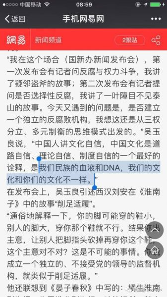 ......
接下来，“春晚”成为VIP，不仅要显示，而且还要禁止评论。这首先说明“春晚”适宜中国人，否则就会被屏蔽。从历史纪录来看，2015年之前的“春晚”是可以评论的。“春晚”成为VIP其实是从去年开始的。我查了一下，2009年“春晚”豆瓣评分是5.8分，2010年5.6分，2011年5.2分，2012年5.2分，2013年5.1分，2014年5.2分，2015年4.2分，然后，就没有然后了。
如果没记错的话，去年的“春晚”应该是史上最完美的一次“春晚”，其导演吕逸涛，“德艺双馨的电视艺术工作者”，给自己的春晚打了100分。要知道，一个“德艺双馨”的人，一个像苍老师一样德艺双馨的人，他的评分一定是超越了豆瓣的极限，豆瓣最高的一个电影条目（“春晚”归入电影条目）是《肖申克的救赎》，9.6分；而2016“春晚”的评分是100分，足足是前者的10.4倍，量级的差异，人间的奇葩。
因此，不可描述，不可评价的“春晚”一旦进入豆瓣的VIP，就好比NBA的名人堂，那就是人间奇葩，凡人的评价已经不足以涵盖其“完美”，正如这个时代，不可描述，不可评价的时代。
La Luna：
救不了，真的！这是全豆瓣最统一的一回。
巴伐利亚酒神：
感觉豆瓣又要被点名批评了……
l ï：
怕豆瓣倒闭，就不打星了
Jason：
为了明年还有个地方声明自己不看春晚，必须先给阿北（豆瓣老板）一条活路
颗斗之乐：
好吧，为了豆瓣，我点赞。。。
萝贝贝：
★造假的“老红军”
（编程随想注：以下是官方微博的截屏）
《中国央视2017年春晚——“老红军造假”引发微博屏蔽潮 @ BBC》
在上星期五（1月27日）晚播出的节目中，主持人表示邀请了几位“老红军、老战士”出席晚会，并介绍了一位86岁、身穿军服的老翁朱光斗。央视在微博上称呼他为“老红军”。
可是，网民指出中共红军部份于1937年8月改名为八路军，南方部份也在同年10月更名为新四军。他们推算出朱光斗当时只有六岁，不可能是红军的一员。
“自由微博”与香港大学微博视野（HKU weiboSCOPE）的记录均显示，有关这位“老红军”的讯息被大量删除，屏蔽情况至星期一（30日）仍在持续。
央视《春晚》官方微博目前没有就这起争议作出回应。
在《春晚》节目播出后，大批观众涌到央视和春晚的微博帐户上吐糟，批评制作人员犯了“重大失误”。
一些网民并认为央视连中共红军和中国人民解放军也没分清“太不认真”，有些也认为央视故意造假，可是“说谎的技术太低”。
也有人批评春晚是为了宣传中共政策与形象，却没有“好好做功课”。
央视之后把出错的帖文删除，稍后重新出帖时已经改称他为“老文艺战士”。可是，随即又有人在新帖子中提出同类质疑，并嘲笑说红军教唆当时还是儿童的朱光斗到前线去“当炮灰”。
爱新觉罗载勋：
你们太不认真了！这位朱光斗非但不是红军，连八路军也没当过；他实际上是在1946年抗日战争胜利后参军的，那时候已经是中国人民解放军了，他于1954年入党。
———而你们说“86岁的老红军朱光斗，从延安开始就以手中的快板为武器，歌唱英雄的人民军队，让我们洗耳恭听，向他们致敬！”是一个重大失误。
胡平：
朱光斗，我都记得很清楚，我们小时候经常在收音机上听到他的快板书。
那时候没有电视，所以对我们这些上点年纪的人来说，这个演员是个大家比较熟悉的演员，也记不得过去给他安上什么老红军的头衔。
所以这次给他戴上个老红军的桂冠，当然就很滑稽，而且就像很多网友说的，年龄根本不对，根本不可能的事情嘛。
★连现场的观众都不给力
（编程随想注：有人睡着了）
（编程随想注：现场观众某些人表情怪异/尴尬）
水晶男孩鸡大帅：
检书少年：
我要是在现场，我也是这种表情。
LexBurner：
我要是在现场，我最怕的不是尴尬，而是自己笑错了。
★又见真理部的河蟹
（编程随想注：以下是中宣部/真理部下发到各级单位的通知）
现启动“春晚”严格管控措施。
请安排好所属自媒体，不要发布恶劣言论，如预热吐槽春晚，采用集纳式，煽动性召集粉丝对春晚进行言论攻击，春晚后发布负面信息等。
一经发现，全部做永久关闭处理。
收到请回复，谢谢。
（编程随想注：除夕当天，在朋友圈发“珍爱生命远离春晚”，会被屏蔽）
（某不知名网友）：
2017年春晚没播完之前，是可以评分的。我最后一次看是2.4分。播完之后就看不到分和评论了。
就在这一刻，我对除夕之夜还辛苦辛劳坚持在上网疯狂删帖，维护网络舆情的工作人员肃然起敬。
看来他们是一年365天，全天监控着你的网络生活环境的。
这样的人不能惹，只能呵呵。
v菇v：
（2017春晚）豆瓣春晚唯一不能评分的一年，或者说，开始不能评分的第一年。
不民主不統一：
你國春晚已經成為共匪的效忠儀式，兲朝奴隸們是沒有資格評論了
晒爱思PsyEyes：
俺博客上，和本文相关的帖子（需翻墙）：
各种迹象显示——党国喉舌正逐渐失去舆论阵地
如何用互联网进行“反洗脑”和“政治启蒙”——分享若干个人经验
聊聊洗脑和脑残——分析“脑残的起源”和“脑残的觉醒”
朝廷为何落入“塔西佗陷阱”？
每周转载：真理部开始对娱乐圈下手——大批自媒体被封号（相关报道及网友评论）
每周转载：不一样的猴年春晚（分享大量网友评论）
版权声明
本博客所有的原创文章，作者皆保留版权。转载必须包含本声明，保持本文完整，并以超链接形式注明作者编程随想和本文原始地址：
https://program-think.blogspot.com/2017/01/weekly-share-108.html
本博客所有的原创文章，作者皆保留版权。转载必须包含本声明，保持本文完整，并以超链接形式注明作者编程随想和本文原始地址：
https://program-think.blogspot.com/2017/01/weekly-share-108.html